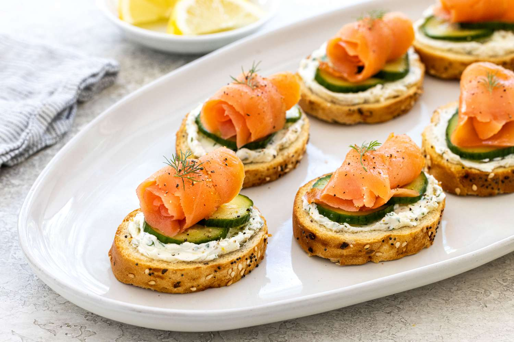

This holiday-ready appetizer is smeared with a lemon, caper, chive, and dill cream cheese spread, then topped with pickled cucumbers and thin slices of cured salmon.
If you are a fan of bagel and lox, you'll love this appetizer! A baguette is thinly sliced and toasted into crostini, the base for this bite-sized starter. The toppings are delicious layers of tangy cream cheese, pickled cucumbers, and cured salmon. The combination of crunchy toast, velvety cheese, pungent cucumbers, and briny seafood makes for a crowd-pleasing hors d'oeuvre. What's great is you can make the toasts, pickles, and spread several days ahead for quick and easy assembly so that you can enjoy your guests. I always save a few on the side for myself because they disappear fast!
Crostini are versatile Italian appetizers that use thinly sliced toasted bread. Whatever you can dream up, sweet, savory, or both, can be added on top. It’s meant to be eaten in a few hearty bites before the main meal. I prefer to use slender baguettes—they are sturdy enough to hold the weight of the toppings and they bake up nice and crisp. Cut them 1/2-ich thick and brush extra virgin olive oil on top for flavor. The oil acts as a protective layer to prevent the bread from getting soggy from the toppings. Bake them until lightly golden brown—it only takes about 10 minutes.
One of my favorite ways to add instant crunch and tanginess to any dish is to make quick pickles. All you need is red wine vinegar and honey. I use a ratio of 2 parts vinegar to 1 part sweetener. The beauty of this concentrated brine is that it only takes 15 minutes to soften and infuse the flavor into the thinly sliced cucumbers. I like to make a large batch to add to sandwiches, burgers, and tacos as a flavor-packed topping.
Smoked salmon and cream cheese are a classic flavor pairing. You could keep the cream cheese plain, but I like to enhance the taste of the smoky seafood by adding lemon zest and juice, chopped capers to complement the rich slices of fish, chives for their subtle onion flavor, and dill for its grassy undertone. If you have leftover cream cheese, I highly recommend shmearing it on your morning bagel or stirring it into your scrambled eggs. It’s so good!
Assemble the crostini right before serving them. Spread a thin layer of the cream cheese spread on the toast. Drain the pickled cucumbers well and add two or three slices on top of the cream cheese. I like to roll up a small slice of smoked salmon to give it height, then place it on top. Freshly cracked black pepper and dill makes for a pretty garnish. Enjoy within an hour for the best taste. Don’t worry, they won’t last that long!
There are easy ways to modify the quick pickle and cheese spread components. Try these delicious swaps: Switch up the pickle brine with what you have in your pantry. White wine vinegar or apple cider vinegar works well. Equal amounts of granulated sugar or maple syrup are good substitutes for the honey. Instead of cucumbers, you can pickle thinly sliced beets or radishes. Add other herbs to the cream cheese spread like parsley, mint, or basil.
In case you want to go back to the main/home page